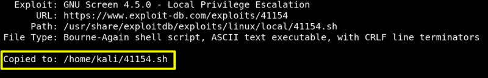

4. Privilege Escalation
a) On your Kali Machine look for an “exploit” using “searchsploit”.
$searchsploit
screen 4.5.0
Output:
b) Copy the file on your Kali system.
$searchsploit
-m 41154
Output:

As you can't run this file you'll have to compile it.
Index